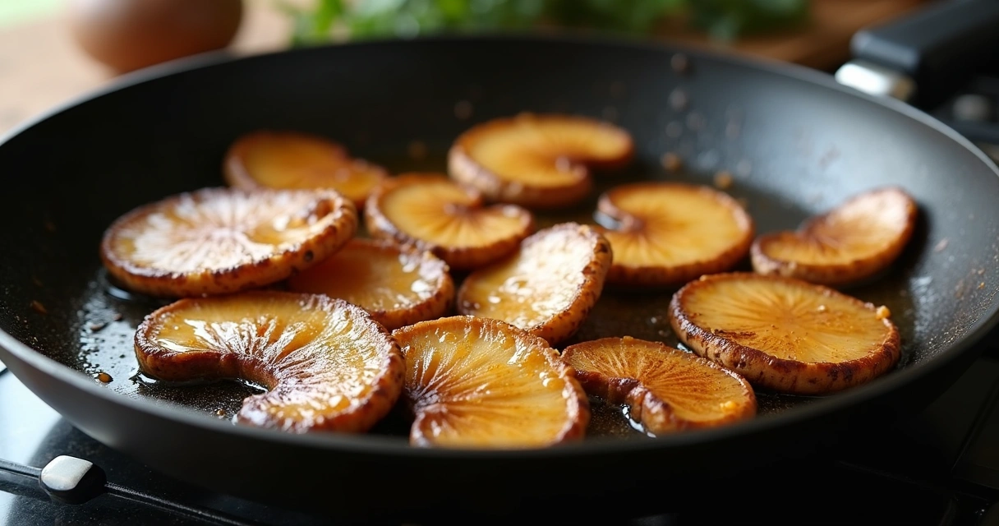
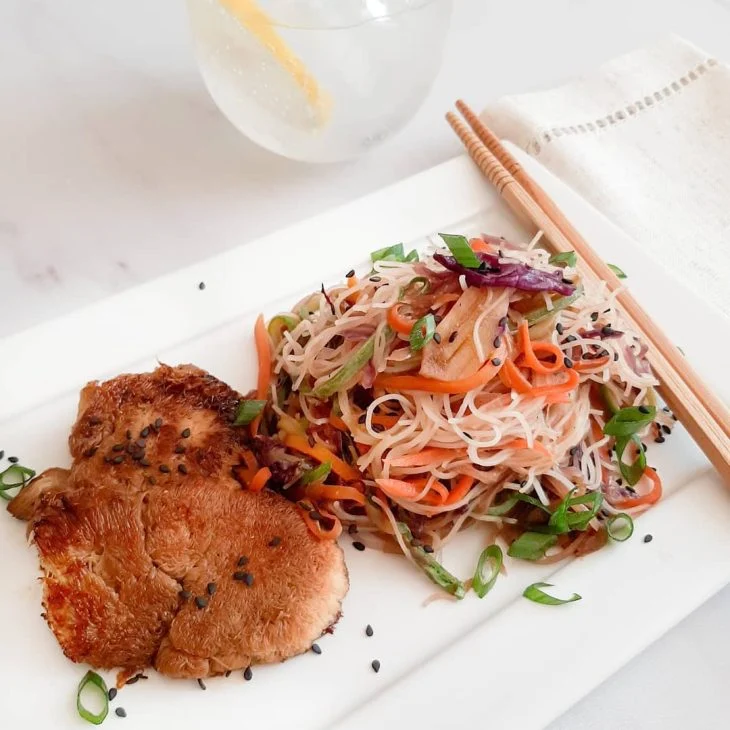
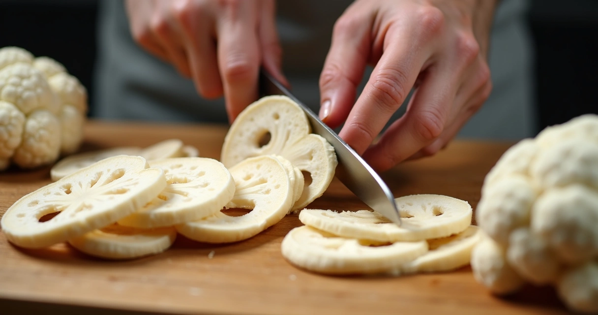
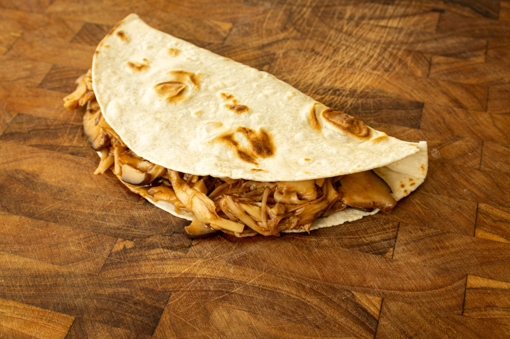

COGUMELO - JUBA DE LEÃO

COGUMELO - JUBA DE LEÃO |
|
|
ContextoO cogumelo Juba de Leão (Hericium erinaceus) possui muito a falar sobre, sendo conhecido principalmente em meios medicinais e culinários por um vasto e largo alcance de usos, possibilidades e qualidades. Esse cogumelo possui a capacidade de ser comprimido por meio de capsulas, das quais são utilizadas para auxiliar no tratamento fitoterápico de várias condições cognitivas, degenerativas e metabólicas. Sendo um dos exemplos mais conhecidos a diabete, onde o cogumelo pode controlar a glicemia e controlar a dor da neuropatia diabética. Um metodo de preparo um tanto exótico (porém ainda popular) do cogumelo é o culinário, onde ele é utilizado como complemento em pratos culinários convencionais. Porém ele verdadeiramente se destaca no ramo de culinária vegana, onde serve de substituto a carne, devido ao seu sabor e à sua textura na qual possui semelhanças muito fortes com a carne bovina tradicional. |
DescobrimentoO Descobrimento desse cogumelo não é atribuído à uma pessoa em específico. Sua história data desde centenas de anos atrás, onde possuia grande popularidade nos meios medicinais asiáticos, sendo usados desde então como remédios para doenças, ajudando a melhorar a saúde digestiva, mental e cerebral. Em japonês, é conhecido como yamabushitake, que significa "cogumelo sacerdote da montanha". Nos tempos modernos, o cogumelo tomou novamente a atenção de cientistas e pesquisadores, que identificaram em décadas recentes seus compostos bioativos, hericenonas e erinacinas, que conseguem atravessar a barreira hematoencefálica e estimular a produção de NGF (Fator de Crescimento Nervoso). O nome "Juba de Leão" (tradução direta do inglês Lion's Mane) vem de sua aparência única, caracterizada por longos espinhos brancos (mais de 1 cm) que lembram a juba de um leão, crescendo em madeiras nobres. |

|
1. Juba de leão grelhado na manteiga (estilo “vieira”)Ingredientes (2 porções)
Preparo
 |
2. Massa com juba de leão, alho e azeiteIngredientes (2–3 porções)
Preparo
 |
3. Juba de leão desfiado estilo “carne” para tacosIngredientes (2–3 porções)
Preparo
 |